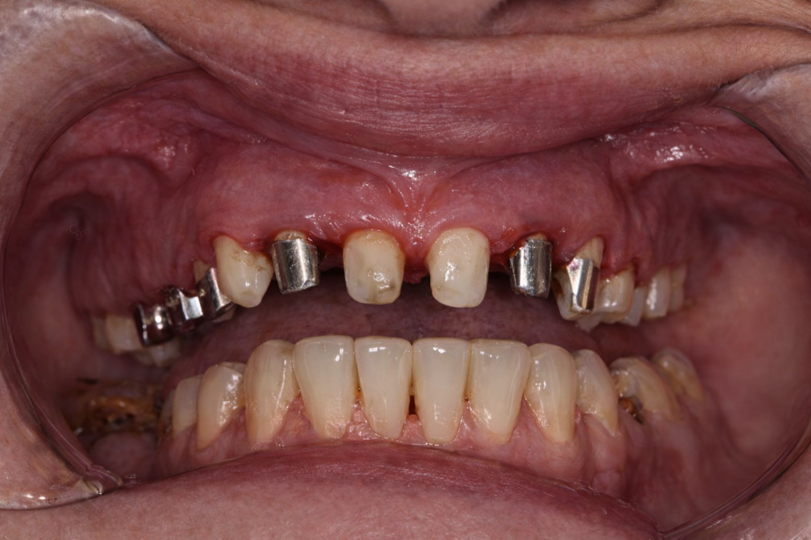
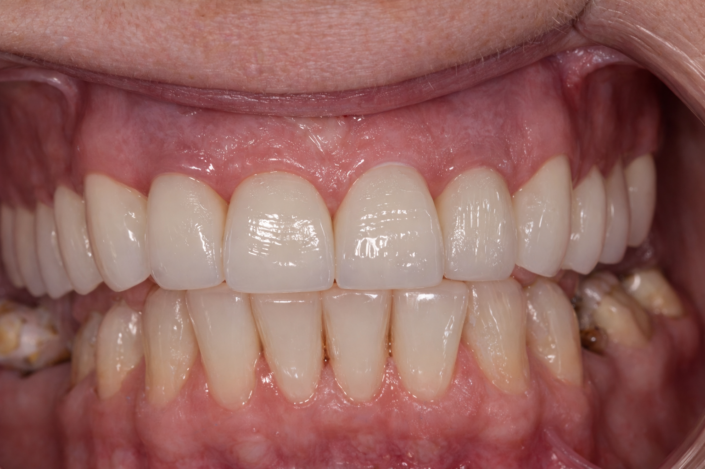

Despre laborator
New Tehnic Dent este un laborator de tehnică dentară cu experiență în domeniu încă din anul 2007, specializat în realizarea lucrărilor protetice fixe și mobile, adaptate cu precizie fiecărui caz clinic. Ne concentrăm pe calitate, detaliu și colaborare eficientă cu medicii stomatologi.
Scopul nostru este să furnizăm lucrări estetice, funcționale și durabile, construite pe baza unei comunicări permanente cu medicii colaboratori. Respectăm protocoalele de lucru și termenele stabilite, pentru ca fiecare restaurare să se integreze armonios și predictibil în tratamentul pacientului.
Cu peste 17 ani de activitate, laboratorul oferă lucrări realizate cu atenție și profesionalism, pe baza unei experiențe acumulate în timp.
Utilizăm materiale și tehnologii actuale, inclusiv zirconiu, ceramică presată și proceduri CAD/CAM, pentru rezultate precise și estetice.
Fiecare lucrare este verificată atent din punct de vedere funcțional și estetic, pentru a asigura o adaptare optimă și un rezultat stabil în timp.
Servicii oferite
Laboratorul New Tehnic Dent realizează o gamă completă de lucrări protetice, folosind tehnologii moderne și materiale certificate. Ne adaptăm fiecărui caz clinic și lucrăm în strânsă colaborare cu medicii stomatologi pentru rezultate precise și estetice.
- Coroane metalo-ceramice
- Coroane integral ceramice (zirconiu, E.max)
- Punți dentare
- Fațete ceramice
- Inlay / Onlay ceramic
- Coroane cimentate sau înșurubate pe implant
- Supraprotezări pe bară sau capse
- Structuri și armături zirconiu CAD/CAM
- Planificare digitală (după caz)
- Proteze totale acrilice
- Proteze parțiale acrilice
- Proteze scheletate
- Reparații proteze
- Rebazări
Flux de lucru pentru medici colaboratori
Pentru o colaborare eficientă și rezultate predictibile, laboratorul New Tehnic Dent urmează un flux de lucru bine stabilit, de la preluarea cazului până la predarea restaurării finale.
1. Preluarea cazului
Primim amprentele (clasice sau digitale) împreună cu indicațiile medicului și analiza inițială a cazului. Confirmăm tipul de lucrare, materialele și particularitățile clinice înainte de începerea execuției.
2. Planificarea lucrării
Stabilim detaliile tehnice: materialele recomandate (zirconiu, E.max, metal-ceramică), nuanța dorită, etapele necesare și termenul final de predare. Comunicarea este constantă pentru a evita ajustările ulterioare.
3. Execuție etapizată
În funcție de tipul restaurării, parcurgem etapele standardizate: modelare, schelet (metal, zirconiu sau CAD/CAM), aplicare ceramică/compozit, verificări estetice și funcționale, finisare, glazurare și lustruire. Contactăm medicul dacă apar detalii ce necesită clarificări.
4. Finalizare și livrare
Lucrarea este verificată pe model din punct de vedere al adaptării și esteticii, apoi livrată împreună cu recomandări de cimentare și informații despre materialele utilizate.
- Coroană metalo-ceramică: 5–7 zile lucrătoare
- Coroană zirconiu / ceramică integrală: 7–10 zile
- Fațete ceramice: 7–10 zile
- Proteze totale / parțiale: 7–10 zile
- Proteze scheletate: 10–14 zile
- Reparații / rebazări: 24–48 ore
*Termenele pot varia în funcție de complexitatea cazurilor și volumul de lucrări în execuție.
Portofoliu lucrări
Caz: restaurare metalo-ceramică – înainte / după
Înainte

După

Restaurare metalo-ceramică completă realizată pentru refacerea funcției și esteticii.
*Imagini cu scop demonstrativ. Identitatea pacientului este protejată.
Contact și colaborări
Pentru colaborări cu medici stomatologi, programarea cazurilor sau întrebări legate de materiale și termene, ne poți contacta folosind formularul de mai jos sau datele de contact.
Adresă: Com. Valea Lupului, Str. Nufărului Nr. 6, Jud. Iași
Telefon: 0742 830 155 / 0728 595 521
Email: newtehnicdent@gmail.com
Program: Luni–Vineri 09:00–18:00
Localizare